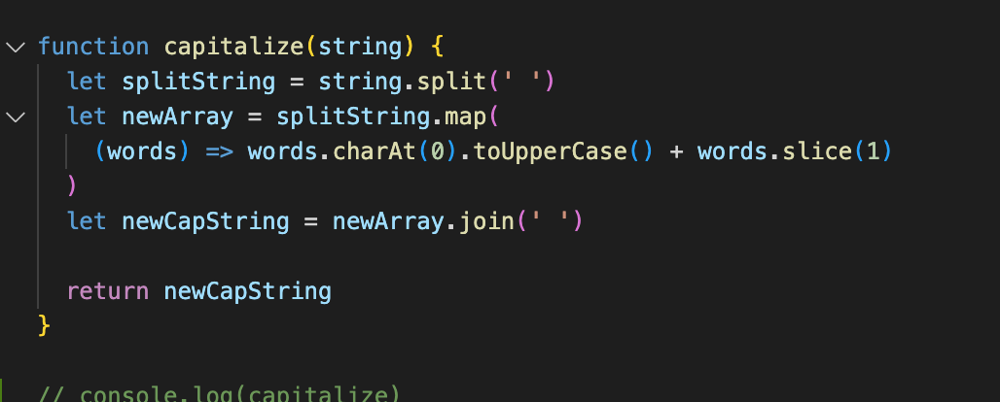
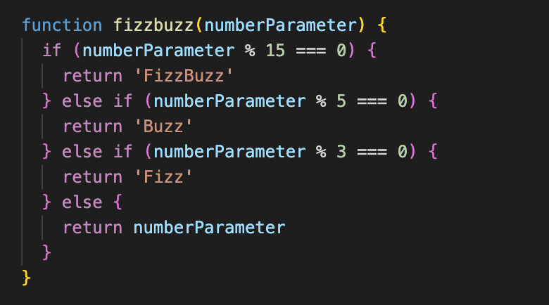

Problem-solving was the name of the game for this week- as it is for many. When it comes to crunch time and you have a lot of things to go through it’s easy to stick to your habits instead of exploring new techniques. I think there are some methods I have not explored yet and I want to work on that going forward. I consider myself to be a bit of a problem solver. I tend the think that I am good at getting out of a sticky spot and getting things done quickly. I think the trick for me is to pair this with deep meaningful learning.
.split, .map, .charAt, .toUpperCase, slice and finally .join back into a string. Phew. All my tests were green aside from the crucial one- EVERYTHING WAS UPPERCASE. I googled, I reconfigured, I pondered and I lingered. Finally, I took a break and asked my study buddy to take a look. He looked through it and said it should work and it baffled him as well. Then he saw my argument on the .split and .join method. He noticed that there was no space (‘’). I added a space and bam (‘ ‘) it worked. My reds all turned to greens.
I realised in learning quickly and cramming in so many methods at one time I had glossed over what the argument was. I had jumped to the conclusion that it represented a string. Not that it signified where the split and join should be to turn the string to an array and visa versa. Sometimes in rushing we take shortcuts and learn the wrong thing. It’s good to go back and double-check and spend some extra time making sure you understand what is actually happening. This showed that I was confident in googling solutions and talking to me peers. My pseudocode needs a bit of work to not be a waste of time and I can continue to improve with reflection.
Here is my final result:
I was pretty stoked with the fizzbuzz kata. I wrote the function and it worked. It felt like a rare moment and gave me a sense of self-confidence for the rest of the challenge. It was good to have a sense of accomplishment and to see growth and that I had retained knowledge- having struggled with the modulo operation in the loops challenge last week and bringing in an old familiarity with conditionals. I realised that a little confidence boost helped me a lot when tackling superfizzbuzz. Upon reflection, I realise that I should have taken some time to refactor the code- try see where I could have improved it, instead of just seeing green and moving on to the next thing.

I find that I am a bit reluctant to ask for help on Discord. I think it might be a combination of the permanent nature of the question as well as not wanting to appear dumb or waste someone’s time by asking the same question. I think this is not sustainable going forward so I want to work on asking my peers for help in public spaces like Discord etc.

Born in Johannesburg, South Africa. I'm here to learn practical skills, make cool shit and find better fonts.